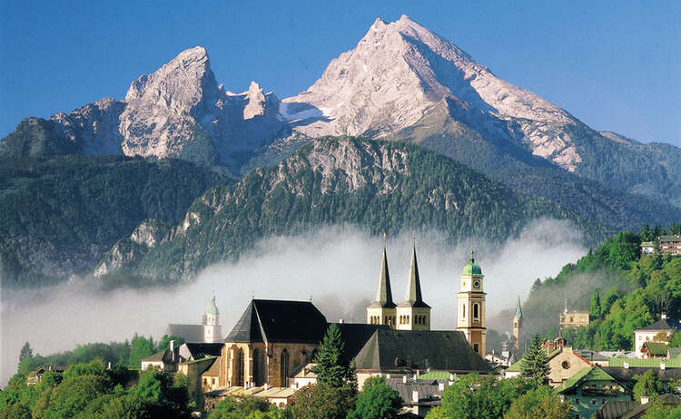

Bienvenidos a Berchtesgaden
Berchtesgaden es una palabra que para muchos evoca naturaleza en su máximo esplendor y tradición a partes iguales. Para otros tiene una carga histórica muy potente.En cambio para algunos es sinónimo de diversión y relax. Y es que nos resulta muy difícil imaginar un lugar con una oferta turística tan abrumadora y con tantas actividades para hacer.
Lo último de nuestro blog
Atracciones turisticas
Transporte
Berchtesgaden es una auténtica región de vacaciones tanto en verano, como en invierno, pudiendo disfrutar en la época más oscura del año, de paisajes nevados y tradiciones navideñas como el entrañable Mercado de Navidad de Berchtesgaden.
